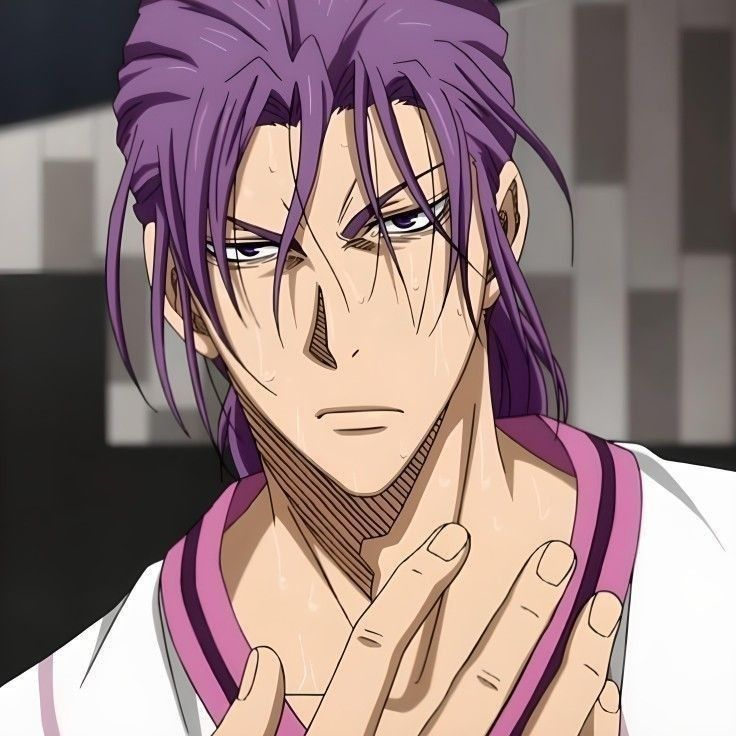

KUROKO NO BASKET
La generation miracle
Composé d'étudiants plus fort les uns que les autres ayant des aptitudes aussi bien distinctes que particulierement dominantes.
Ils jouèrent tous dans l'équipe de Teiko ou ils écrasèrent tous leurs adversères sans aucun effort. Afin de continuer à pratiquer le basket sans perdre cette passion, ils decidèrent alors de se séparer afin d'integrer chacun un club differents et de s'affronter un bon jour dans le but de déclarer le meilleur d'entre eux.
-
Midorima Shintaro

Aussi reconnu sur le nom de Sniper Midorima est le shooter du lycée Shutoku.Il rencontra dans cette équipe un autre joueur du nom Takao avec qui il forma un duo spectaculaire Lui qui jouait si perso avant.
-
Atsushi Murasakibara

Dans la vie courante ce n'est qu'un grand gaillard qui fourni peu d'effort, ne fais que manger des bonbons et des biscuits s'en foutant de tout ce qui l'entoure mais sur le paquet c'est un vrai monstre, doté des capacités physiques comparables à ceux des professionnels, il est capable de gagner un match à lui tout seul
-
Ryota Kise

Le joueur le plus polyvalent de l'équipe. Il est capable de reproduire n'importe quelle technique juste en la regardant et il a un talent inné pour le basket.
-
Aomine Daiki

Il decouvri tres tot le basket en grandissant sur les terrains de street basket. Son jeu etait unique et il adorait se confrontrer à toujours plus fort que lui. Grace à son talent inouie et ses mouvements imprévisible il fut surnomé l'AS de la génération miracle.
-
Tetsuya Kuroko

Dans la vie courante comme sur le paquet, il a une présence très peu remarquable.Il fait usage de cette propriété naturelle afin de se faire oublier par ses adversaires et utiliser superbement son point fort qui est la passe.
-
Seijuro Akashi

Issu d'une famille de la haute société il est dès son plus jeune age éduqué de la manière la plus stricte possible le poussant à ne jamais échouer quelque soit le domaine.